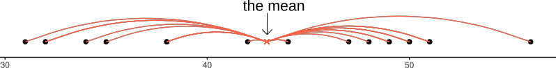
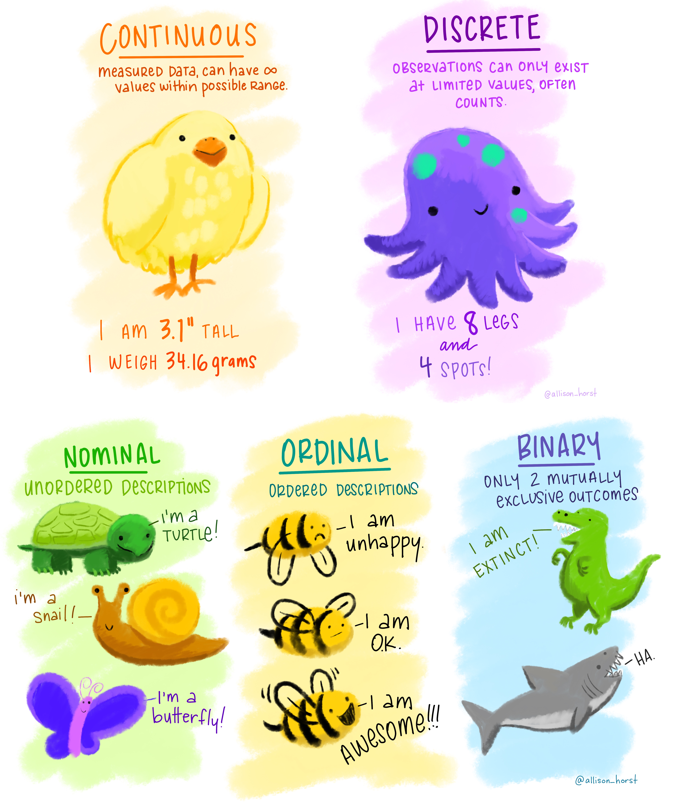
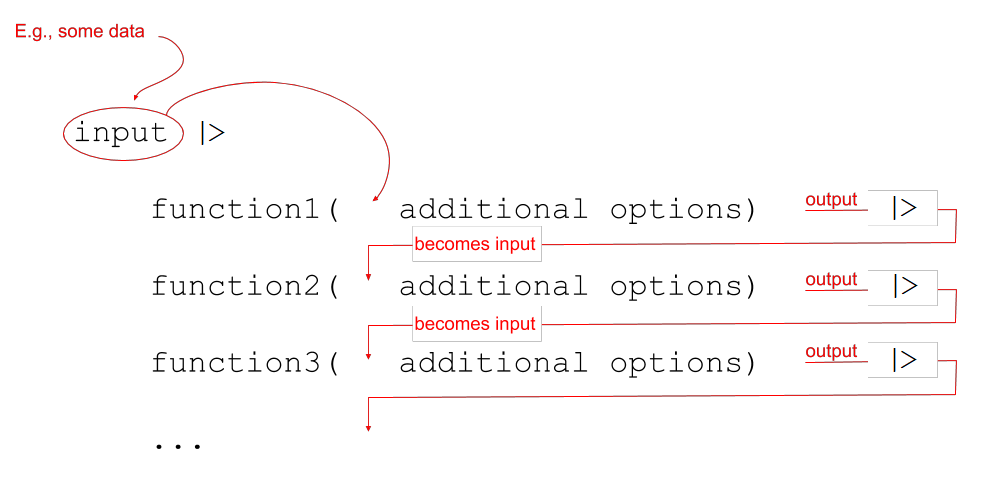
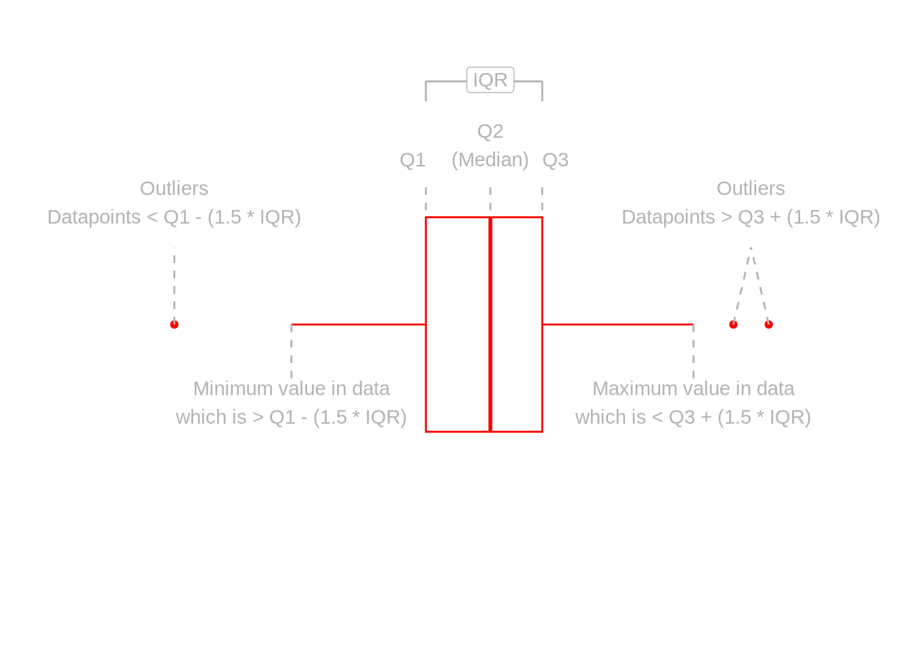
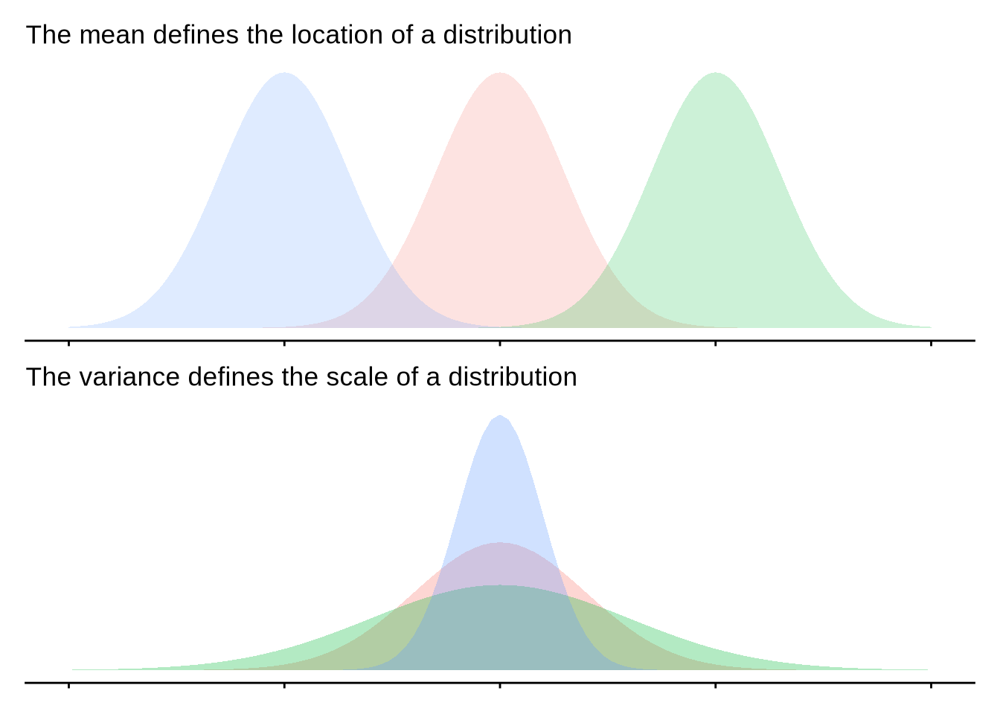
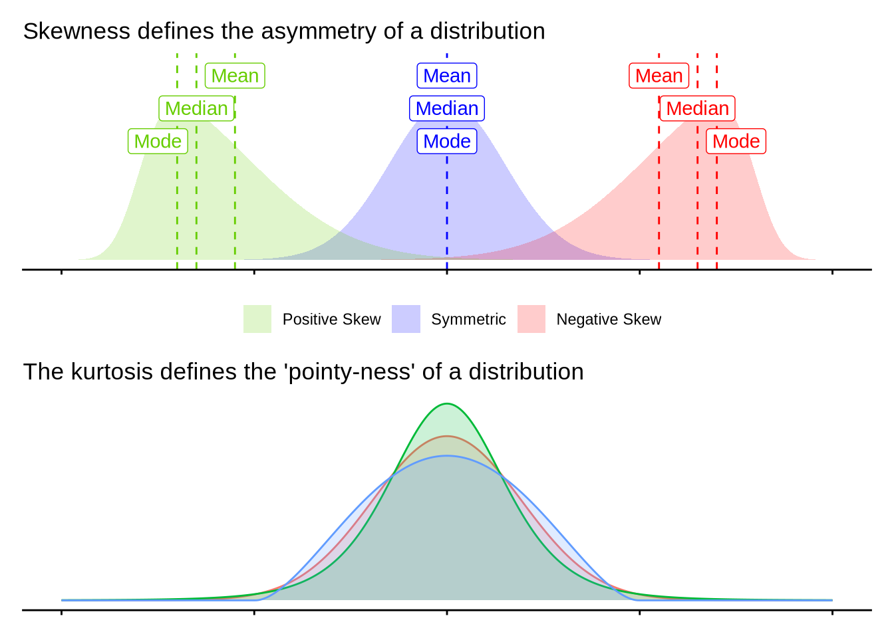
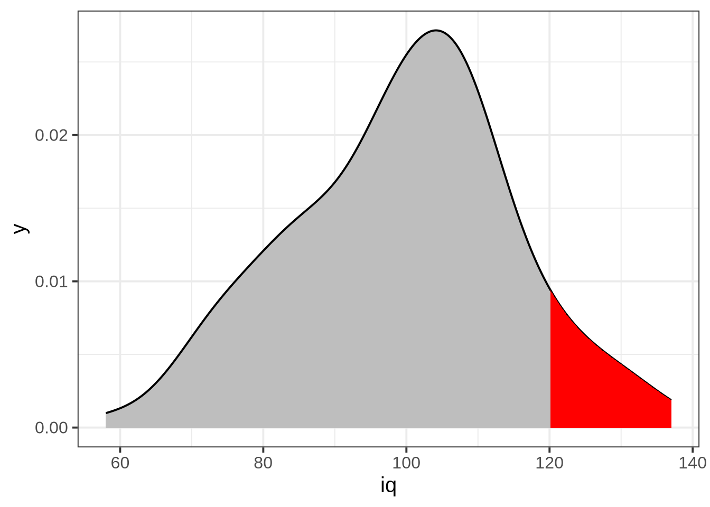
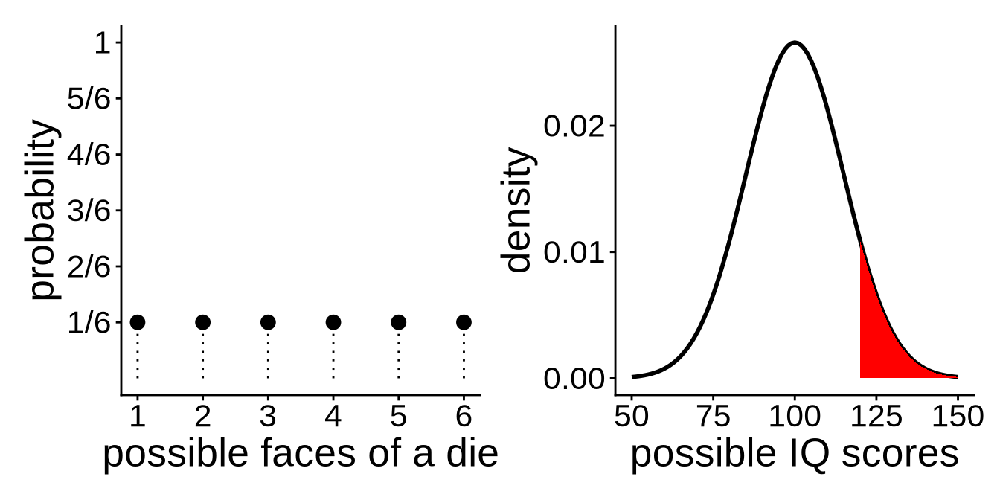

3: Measurement & Distributions
You are viewing an interactive version of this reading.
Please allow ~30 seconds for packages to load before code chunks can be run
Click here for the static version
This reading:
- What different types of data can we collect?
- How can we summarise and visualise distributions of different types of data?
Also:
- The “tidyverse”: a different style of coding in R
Types of Data
In the example of rolling a single die (like our simulations last week), each roll of the die could take one of a discrete set of responses (1, 2, 3, 4, 5 or 6). A die cannot land on 5.3, or 2.6.
There are many different things we can measure / record on observational units, and the data we collect can have different characteristics. Some data will be similar to rolling a die in that values take on categories, and others could take any value on a continuous scale.
For example, think about the short survey we sent out at the start of this course. Amongst other things, the survey captures data on heights (it asks for answers in cm, and respondents can be precise as they like) and eye-colours (chosen from a set of options). We distinguish between these different types of data by talking about variables that are categorical (responses take one of a set of defined categories: “blue”, “green”, and so on..) and those that are numeric (responses are in the form of a number). Within each of these, there also are a few important sub-classes.
When we collect data, we typically get a sample of observational units (e.g., the set of people we collect data from) and each variable that we measure gives us a set of values - a “distribution”. This chapter walks through the various different types of data we might encounter, and some of the metrics we use to summarise distributions of different types. Typically, summaries of distributions focus on two features:
- central tendency: where most of the data falls
- spread: how widely dispersed the data are
To look at a variety of different types of data, we will use a dataset on some of the most popular internet passwords, their strength, and how long it took for an algorithm to crack it. The data are available online at https://uoepsy.github.io/data/passworddata.csv.
Data: Passwords
You can read in the dataset by using code such as the below:
pwords <- read.csv("https://uoepsy.github.io/data/passworddata.csv")| Variable Name | Description |
|---|---|
| rank | Popularity in the database of released passwords |
| password | Password |
| type | Category of password |
| cracked | Time to crack by online guessing |
| strength | Strength = quality of password where 10 is highest, 1 is lowest |
| strength_cat | Strength category (weak, medium, strong) |
Categorical
Categorical variables tell us what group or category each individual belongs to. Each distinct group or category is called a level of the variable.
| Type | Description | Example |
|---|---|---|
| Nominal (Unordered categorical) | A categorical variable with no intrinsic ordering among the levels. | Species: Dog, Cat, Parrot, Horse, … |
| Ordinal (Ordered categorical) | A categorical variable which levels possess some kind of order | Level: Low, Medium, High |
| Binary categorical | A special case of categorical variable with only 2 possible levels | isDog: Yes or No. |
If we want to summarise a categorical variable into a single number, then the simplest approach is to use the mode:
- Mode: The most frequent value (the value that occurs the greatest number of times).
When we have ordinal variables, there is another option, and that is to use the median:
- Median: This is the value for which 50% of observations are lower and 50% are higher. It is the mid-point of the values when they are rank-ordered. (Note that “lower” and “higher” requires our values to have an order to them)
When we use the median as our measure of central tendency (i.e. the middle of the distribution) and we want to discuss how spread out the spread are around it, then we will want to use quartiles. The Inter-Quartile Range (IQR) is obtained by rank-ordering all the data, and finding the points at which 25% (one quarter) and 75% (three quarters) of the data falls below (this makes the median the “2nd quartile”).
In our dataset on passwords, we have various categorical variables, such as the type of password (categories like “animal”, “fluffy” etc).
There are various ways we might want to summarise categorical variables like this. We have already seen the code to do this in our example of the dice simulation - we can simply counting the frequencies in each level:
This shows us that the mode (most common) is “name” related passwords.
We could also convert these to proportions, by dividing each of these by the total number of observations. For instance, here are the percentages of passwords of each type1:
Often, if the entries in a variable are characters (letters), then many functions in R (like table()) will treat it the same as if it is a categorical variable.
However, this is not always the case, so it is good to tell R specifically that each variable is a categorical variable.
There is a special way that we tell R that a variable is categorical - we set it to be a “factor”. Note what happens when we make the “type” and “strength_cat” variables to be a factor:
R now recognises that there a set number of possible response options, or “levels”, for these variables. We can see what they are using:
The “strength_cat” variable specifically has an ordering to the levels, so we might be better off also telling R about this ordering. We do this like so:
Sometimes, we might have a variable that we know is categorical, but we might want to treat it as a set of numbers instead. A very common example in psychological research is Likert data (questions measured on scales such as “Strongly Disagree”>>“Disagree”>>…>>“Strongly Agree”).
It is often useful to have these responses as numbers (e.g. 1 = “Strongly Disagree” to 5 = “Strongly Agree”), as this allows us to use certain functions and analyses more easily. For instance, the median() and IQR() functions require the data to be numbers.
This will not work:
When we ask R to convert a factor to a numeric variable, it will give turn the first category into 1, the second category to 2, and so on. As R knows that our strength_cat variable is the ordered categories “weak”>>“medium”>>“strong”, then as.numeric(pwords$strength_cat) will turn these to 1s, 2s, and 3s.
Converting between types of data:
In R, we can use various functions to convert between different types of data, such as:
factor()/as.factor()- to turn a variable into a factoras.numeric()- to turn a variable into numbersas.character()- to turn a variable into letters
and we can check what type of data something is coded as, by using is.factor(), is.numeric(), is.character().
Tipbe careful with conversions
Study the code below and the output.
Think carefully about why this happens:
Why is the output different here?
Numeric
Numeric (or quantitative) variables consist of numbers, and represent a measurable quantity. Operations like adding and averaging make sense only for numeric variables.
| Type | Description | Example |
|---|---|---|
| Continuous | Variables which can take any real number within the specified range of measurement | Height: 172, 165.2, 183, … |
| Discrete | Variables which can only take integer number values. For instance, a counts can only take positive integer values (0, 1, 2, 3, etc.) | Number_of_siblings: 0, 1, 2, 3, 4, … |
One of the most frequently used measures of central tendency for numeric data is the mean. The mean is calculated by summing all of the observations together and then dividing by the total number of obervations (\(n\)).
Mean: \(\bar{x}\)
When we have sampled some data, we denote the mean of our sample with the symbol \(\bar{x}\) (sometimes referred to as “x bar”). The equation for the mean is:
\[\bar{x} = \frac{\sum\limits_{i = 1}^{n}x_i}{n}\]
NoteHelp reading mathematical formulae
This might be the first mathematical formula you have seen in a while, so let’s unpack it.
The \(\sum\) symbol is used to denote a series of additions - a “summation”.
When we include the bits around it: \(\sum\limits_{i = 1}^{n}x_i\) we are indicating that we add together all the terms \(x_i\) for values of \(i\) between \(1\) and \(n\): \[\sum\limits_{i = 1}^{n}x_i \qquad = \qquad x_1+x_2+x_3+...+x_n\]
So in order to calculate the mean, we do the summation (adding together) of all the values from the \(1^{st}\) to the \(n^{th}\) (where \(n\) is the total number of values), and we divide that by \(n\).
If we are using the mean as our as our measure of central tendency, we can think of the spread of the data in terms of the deviations (distances from each value to the mean).
Recall that the mean is denoted by \(\bar{x}\). If we use \(x_i\) to denote the \(i^{th}\) value of \(x\), then we can denote deviation for \(x_i\) as \(x_i - \bar{x}\).
The deviations can be visualised by the red lines in Figure 1.

The sum of the deviations from the mean, \(x_i - \bar x\), is always zero
\[ \sum\limits_{i = 1}^{n} (x_i - \bar{x}) = 0 \]
The mean is like a center of gravity - the sum of the positive deviations (where \(x_i > \bar{x}\)) is equal to the sum of the negative deviations (where \(x_i < \bar{x}\)).
Because deviations around the mean always sum to zero, in order to express how spread out the data are around the mean, we must we consider squared deviations.
Squaring the deviations makes them all positive. Observations far away from the mean in either direction will have large, positive squared deviations. The average squared deviation is known as the variance, and denoted by \(s^2\)
Variance: \(s^2\)
The variance is calculated as the average of the squared deviations from the mean.
When we have sampled some data, we denote the mean of our sample with the symbol \(\bar{x}\) (sometimes referred to as “x bar”). The equation for the variance is:
\[s^2 = \frac{\sum\limits_{i=1}^{n}(x_i - \bar{x})^2}{n-1}\]
Cautionoptional: why n minus 1?
The top part of the equation \(\sum\limits_{i=1}^{n}(x_i - \bar{x})^2\) can be expressed in \(n-1\) terms, so we divide by \(n-1\) to get the average.
Example: If we only have two observations \(x_1\) and \(x_2\), then we can write out the formula for variance in full quite easily. The top part of the equation would be: \[
\sum\limits_{i=1}^{2}(x_i - \bar{x})^2 \qquad = \qquad (x_1 - \bar{x})^2 + (x_2 - \bar{x})^2
\]
The mean for only two observations can be expressed as \(\bar{x} = \frac{x_1 + x_2}{2}\), so we can substitute this in to the formula above. \[
(x_1 - \bar{x})^2 + (x_2 - \bar{x})^2
\] becomes: \[
\left(x_1 - \frac{x_1 + x_2}{2}\right)^2 + \left(x_2 - \frac{x_1 + x_2}{2}\right)^2
\] Which simplifies down to one value: \[
\left(\frac{x_1 - x_2}{\sqrt{2}}\right)^2
\]
So although we have \(n=2\) datapoints, \(x_1\) and \(x_2\), the top part of the equation for the variance has 1 fewer units of information. In order to take the average of these bits of information, we divide by \(n-1\).
One difficulty in interpreting variance as a measure of spread is that it is in units of squared deviations. It reflects the typical squared distance from a value to the mean.
Conveniently, by taking the square root of the variance, we can translate the measure back into the units of our original variable. This is known as the standard deviation.
Standard Deviation: \(s\)
The standard deviation, denoted by \(s\), is a rough estimate of the typical distance from a value to the mean.
It is the square root of the variance (the typical squared distance from a value to the mean).
\[ s = \sqrt{\frac{\sum\limits_{i=1}^{n}(x_i - \bar{x})^2}{n-1}} \]
In the passwords dataset, we only have one continuous variable, and that is the “cracked” variable, which if we recall is the “Time to crack by online guessing”. You might be questioning whether the “strength” variable, which ranges from 1 to 10 is numeric? This depends on whether we think that statements like “a password of strength 10 is twice as strong as a password of strength 5”.
For now, we’ll just look at the “cracked” variable.
To calculate things like means and standard deviations in R is really easy, because there are functions that do them all for us.
For instance, we can do the calculation by summing the cracked variable, and dividing by the number of observations (in our case we have 500 passwords):
Or, more easily, we can use the mean() function:
We can get R to calculate the variance and standard deviation with the var() and sd() functions:
and just to prove to ourselves:
If a column of our dataset contains only numbers, R will typically just interpret it as a numeric variable. However, we should still be careful; remember what happens if we have just one erroneous entry in there - they can all change to be characters (surrounded by quotation marks):
We can force a variable to be numeric by using as.numeric(), which will also coerce any non-numbers to be NA (not applicable):
If there is an NA in the variable, many functions like mean(), var() and sd() will not compute:
However, we can ask these functions to remove the NAs prior to the computation:

Advances in R
Before we get started on some visualisations and summaries of different types of data, we’re going to briefly introduce some crucial bits of R code.
This is a pipe!
We have seen already seen a few examples of code such as:
dim(somedata)
table(somedata$somevariable)And we have seen how we might wrap functions inside functions:
barplot(table(somedata$somevariable))This sort of writing (functions inside functions inside functions) involves R evaluating code from the inside out. But a lot of us don’t intuitively think that way, and actually find it easier to think in terms of a sequence. The code barplot(table(somedata$somevariable)) could be read as “take this variable, then make a table of it, then make a barplot of that table”.
We can actually write code that better maps to this way of reading, using a nice little symbol called a “pipe”:
Piping
We can write in a different style, however, and this may help to keep code tidy and easily readable - we can write sequentially:

Notice that what we are doing is using a new symbol: |>
This symbol takes the output of whatever is on it’s left-hand side, and uses it as an input for whatever is on the right-hand side.
The |> symbol gets called a “pipe”.
Let’s see it in action with the passwords dataset we’ve been using.
inside-out
The typical way of writing code is requires reading from the inside-out:
piped
When we pipe code, we can read it from left to right:
Cautionoptional: other pipes: |> and %>%
The |> pipe is a relatively recent addition to R, but will likely be replacing the older %>% pipe that was in a specific set of packages, and has been around since about 2014.
These two pipes do basically the same thing
There are some subtle differences between the two that only become apparent in very specific situations, none of which are likely to arise on this course.
However, it’s important to be aware of them both, because you will like see them both in resources/online forums etc. You can usually just use them interchangeably.
# for %>% we need the tidyverse
library(tidyverse)
1:10 %>% mean()# the new base R pipe
1:10 |> mean()The Tidyverse
We’re going to use pipes a lot throughout this course, and it pairs really well with a group of functions in the tidyverse packages, which were designed to be used in conjunction with a pipe:
select()extracts columns
filter()subsets data based on conditions
mutate()adds new variables
group_by()group related rows together
summarise()/summarize()reduces values down to a single summary
Typically, the tidyverse means that we no longer have to keep telling R in which dataframe to look for the variable. The tidyverse functions are designed to make things is a bit easier. The examples below show how.
You’ll notice that the code has lots of indentations to make it more readable, which RStudio does for you when you press enter!
Before anything else, however, we need to load the tidyverse package.
We get some messages when we load it, because the tidyverse is actually lots of packages in one:
select()
We know about using $ to extract a column from a dataframe. The select() function is a little bit like that - it allows us to choose certain columns in a dataframe. It will return all rows.
Because we can select multiple columns this way, it doesn’t return us a vector (in the way dataframe$variable does), but returns a dataframe:
data |>
select(variable1, variable2)translation: take the data and select the “variable1” and “variable2” columns
Tidyverse
Base R
filter()
The filter() function is a bit like the [] to choose rows that meet certain conditios - it allows us to filter a dataframe down to those rows which meet a given condition. It will return all columns.
data |>
filter(variable1 == value1)translation: take the data and filter it to only the rows where the “variable1” column is equal to “value1”.
Tidyverse
Base R
mutate()
The mutate() function is used to add or modify variables to data.
data |>
mutate(
newvariable = oldvariable * 2
)translation: take the data, then mutate it, such that there is a variable called “newvariable”, which has the values of a variable called “oldvariable” multiplied by two.
To ensure that our additions/modifications of variables are stored in R’s environment (rather than simply printed out), we need to reassign the name of our dataframe:
data <-
data |>
mutate(
...
)Note: Inside functions like mutate(), we don’t have to keep using the dollar sign $, as we have already told it what data to look for variables in.
Tidyverse
Base R
summarise()
The summarise() function is used to reduce variables down to a single summary value.
data |>
summarise(
summary_value = sum(variable1),
summary_value2 = mean(variable2)
)translation: take the data, then summarise it, such that there is a value called “summary_value”, which is the sum() of “variable1” column, and a value called “summary_value2” which is the mean() of the “variable2” column.
Tidyverse
Base R
To store these all in the same object (like the tidyverse way) we would have to create a data.frame() and add these as variables.
group_by()
The group_by() function is often used as an intermediate step in order to do something. For instance, if we want to summarise a variable by calculating its mean, but we want to do that for several groups, then we first group_by() and then summarise():
data |>
group_by(mygroups) |>
summarise(
summary_col = mean(variable1)
)translation: take the data, and group it by the levels of the “mygroups” variable, then take the grouped-data and summarise it so that there is a column called “summary_col”, which is the mean of the “variable1” column for each group.
Tidyverse
Base R
This is less easy. There are functions in Base R that can do similar things, but we’re not going to teach those here. You could envisage getting all the same values by doing:
ggplot
We’re going to now make our first steps into the world of data visualisation, and start learning some methods for presenting plots of distributions of various types of data. R is an incredibly capable language for creating visualisations of almost any kind. It is used by many media companies (e.g., the BBC), and has the capability of producing 3d visualisations, animations, interactive graphs, and more.
“By visualizing information, we turn it into a landscape that you can explore with your eyes. A sort of information map. And when you’re lost in information, an information map is kind of useful.” – David McCandless
We are going to use the most popular R package for visualisation: ggplot2. This is actually part of the tidyverse, so if we have an R script, and we have loaded the tidyverse packages at the start (by using library(tidyverse)), then ggplot2 will be loaded too).
Recall our way of plotting frequencies that we have seen so far (we saw this in the dice simulations):
We can also use ggplot() to visualise this. The benefit is that we can easily then edit all aspects of the visualisation.
Basic ggplot components
Note the key components of the ggplot code.
data =where we provide the name of the dataframe.aes =where we provide the aesthetics. These are things which we map from the data to the graph. For instance, the x-axis, or if we wanted to colour the columns/bars according to some aspect of the data.
Then we add (using +) some geometry. These are the shapes (in our case, the columns/bars), which will be put in the correct place according to what we specified in aes().
+ geom_....Adds different shapes (e.g., bars) to the plot.
You can find great documentation on ggplot2 at https://www.statsandr.com/blog/graphics-in-r-with-ggplot2/.
Notelooking ahead
Use these as reference for when you want to make changes to the plots you create.
Additionally, remember that google is your friend - there are endless forums with people asking how to do something in ggplot, and you can just copy and paste bits of code to add to your plots!
- Filling/colouring geoms:
- Change the limits of the axes:
- Remove (or reposition) the legend:
- Changing the theme. Theme-type stuff can also be used to do things such as making axes labels rotate (I always have to google how to do this stuff!)
- Other shapes, x and y:

Visualising Distributions
Boxplots
Boxplots provide a useful way of visualising the interquartile range (IQR). You can see what each part of the boxplot represents in Figure Figure 4.

We can create a boxplot of our age variable using the following code:
Histograms
Now that we have learned about the different measures of central tendency and of spread, we can look at how these map to how visualisations of numeric variables look.
We can visualise numeric data using a histogram, which shows the frequency of values which fall within bins of an equal width.
To do this, we’re going to use some new data, on 120 participants’ IQ scores (measured on the Wechsler Adult Intelligence Scale (WAIS)), their ages, and their scores on 2 other tests. The data are available at https://uoepsy.github.io/data/wechsler.csv
translation: make a ggplot with the “wechsler” data. on the x axis put the possible values in the “iq” variable, add a histogram geom (will add bars representing the count in each bin of the variable on the x-axis)
We can specifiy the width of the bins:
Let’s take a look at the means and standard deviations of participants’ scores on the other tests (the test1 and test2 variables).
Note how nicely we can do this with our newfound tidyverse skills!
Tests 1 and 2 have similar means (around 50), but the standard deviation of Test 2 is almost double that of Test 1. We can see this distinction in the visualisation below - the histograms are centered at around the same point (50), but the one for Test 2 is a lot wider than that for Test 1.
Defining moments
The “moments” of a distribution are the metrics that relate to the shape of that distribution. We’ve already seen the primary two moments that define the shapes of these distributions: the mean and the variance. The mean moves the distribution right or left, and the variance makes the distribution wider or narrower.
There are two more, “skewness” and “kurtosis” which tend to be of less focus of investigation (the questions we ask tend to be mainly concerned with means and variances). Skewness is a measure of asymmetry in a distribution. Distributions can be positively skewed or negatively skewed, and this influences our measures of central tendency and of spread to different degrees. The kurtosis is a measure of how “pointy” vs “rounded” the shape of a distribution is.


Density
In addition to grouping numeric data into bins in order to produce a histogram, we can also visualise a density curve.
Because there are infinitely many values that numeric variables could take (e.g., 50, 50.1, 50.01, 5.001, …), we could group the data into infinitely many bins. This is essentially what we are doing with a density curve.
You can think of “density” as a bit similar to the notion of “relative frequency” (or “proportion”), in that for a density curve, the values on the y-axis are scaled so that the total area under the curve is equal to 1. In creating a curve for which the total area underneath is equal to one, we can use the area under the curve in a range of values to indicate the proportion of values in that range.
Area under the curve
Think about the barplots we have been looking at in the exercises where we simulate dice rolling :
To think about questions like “what proportion of 1000 rolls does the die land on 6?”, we are simply interested in the count of 6s divided by the count of all rolls:
So Another way of thinking of this is that we are just dividing the count in each category by the total number. Or, Put another way, imagine we divide the area of each bar by the total area. The area now sums to 1, and our question is asking about the ratio of the red area to the total area (grey + red):
Nothing really changes with a density curve! If we want to ask what proportion of our distribution of IQ scores is >120, then we are asking about the area under the curve that is to the right of 120:

It looks like about a third, maybe a little less. Let’s calculate this proportion directly:
It might seem a little odd to think about area under the curve when we are asking about “what proportion of the data is …?”. If we have the data, then we can just calculate the answer (like we did above). However, a lot of statistics is really concerned with the probability of events. When we discuss probability, we move from talking about a specific set of observed data to thinking about a theoretical/mathematical model that defines the way in which data is generated. This where it becomes more useful to think about distributions in a more abstract sense.
For instance, with a fair six-sided die, we have a probability distribution (Figure 5) in which each side is given the probability \(\frac{1}{6}\): \[ \begin{gather*} P(x) = \begin{cases} \frac{1}{6} & \text{if $x \in \{1,2,3,4,5,6\}$}\\ 0 & \text{otherwise.} \end{cases} \end{gather*} \] Instead of rolling a die, suppose that we are picking a person off the street and measuring their IQ. Given that IQ scales are designed to have a mean of 100 and standard deviation of 15, what is the probability that we pick a person with an IQ of greater than 110?

Footnotes
think about what
sum(table(pwords$type))is doing. it’s counting all the values in the table. so it’s going to give us the total↩︎